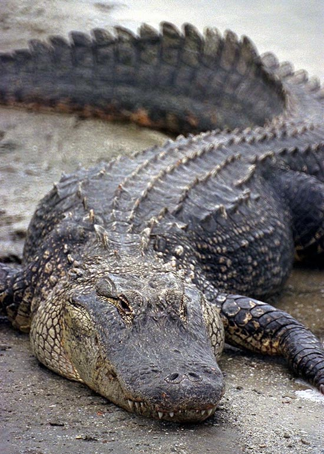
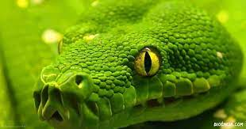

Jacaré
Alligatoridae
| Reino: | Animalia |
| Classe: | Reptilia |
Jacaré, também chamado aligátor e
caimão, são crocodilianos da família Alligatoridae, sendo muito parecidos
com os crocodilos, dos quais se distinguem pela cabeça mais curta e larga e pela presença de membranas
interdigitais nos polegares das patas traseiras. Diferenciam-se dos crocodilos ainda com relação à dentição,
o quarto dente canino da mandíbula inferior encaixa num furo da mandíbula superior, enquanto que nos
crocodilos sobressai para fora, quando têm a boca fechada. O tamanho de um jacaré pode variar de 1,2 metros
(jacaré-anão) até 5,5 metros (jacaré-açu), podendo pesar de seis a seiscentos quilos.
Os jacarés habitam as Américas, tendo desaparecido da Europa no Plioceno. Na América
do Norte, ocorre, somente, o gênero Alligator.
Os jacarés se diferenciam dos crocodilos por possuírem uma cabeça mais curta e mais
larga, com focinhos mais avantajados. Jacarés ingerem carne e peixe.
O menor jacaré é o jacaré-anão, cujo comprimento varia entre 1,2 e 1,4 metros e pesa
de 6 a 7 quilogramas. O aligátor-americano tem um tamanho médio de 3 a 4,6 metros, chegando até 5,3
metros e 400 quilogramas. O tamanho médio do jacaré-açu é de 2,8 a 4,2 metros, podendo alcançar os
6 metros e mais de 400 quilogramas.
Jiboia
Boidae
| Reino: | Animalia |
| Classe: | Reptilia / Sauropsida |
| Subclasse: | Diapsida |
Boidae é uma família de serpentes não peçonhentas encontradas nas
Américas, na África, na Europa, na Ásia e em algumas Ilhas do Oceano Pacífico. Serpentes relativamente
primitivas, os adultos têm tamanho médio a grande, sendo que as fêmeas geralmente são maiores que os machos.
Duas subfamílias que compreendem oito gêneros e 43 espécies são reconhecidas atualmente. Os membros dessa
família são chamados de Boídeos ou Boas, e são popularmente conhecidos
como jiboias. Podem ultrapassar os quatro metros de comprimento e raramente, chegar a seis metros.
Como as pítons, as boas têm ossos alongados supratemporais. Os ossos quadrados
também são alongados, mas não tanto, enquanto que ambos são capazes de mover-se livremente de modo que
quando eles passam lateralmente para a sua máxima extensão, a distância entre as dobradiças da mandíbula é
aumentada significativamente.
Ambas as famílias partilham de um número de características primitivas. Quase todos
têm uma mandíbula inferior relativamente rígida com um elemento de coronóide, bem como um cinto pélvico
vestigial com membros posteriores que são parcialmente visíveis como um par de esporas, uma em cada lado da
abertura. Nos machos, essas esporas anais são maiores e mais visíveis do que nas fêmeas. Uma longa fila de
dentes palatais está presente e a maioria das espécies têm um pulmão esquerdo funcional que pode ser de até
75% maior que o pulmão direito.
As boas, no entanto, distinguem-se das pítons pelo fato de que nenhuma espécie
possui ossos pós frontais ou dentes pré-maxilares, e que elas dão à luz filhotes vivos. Quando as fossetas
loreais são presentes, estas situam-se entre as escalas em vez de sobre elas. Além disso, suas distribuições
geográficas são quase inteiramente excludentes. Nas poucas áreas onde podem coexistir, a tendência é
ocuparem diferentes habitats.
Costumava-se dizer que boas são encontrados na Novo Mundo e pítons na Velho Mundo,
mas por existir espécies de boas presentes no Madagascar, nas Ilhas Fiji e nas Ilhas Salomão, essa
afirmativa não é muito precisa; em vez disso, parece que elas sobreviveram em áreas evolutivamente isoladas.
A América do Sul ficou isolada até alguns milhões de anos atrás, com uma fauna que incluiu marsupiais e
outros mamíferos distintos. Com a formação dos istmo do Panamá, para a América do Norte, cerca de três
milhões de anos atrás, as boas migraram para o norte como as serpentes da família Colubridae (assim como
várias mamíferos neoárticos) que migraram para o sul, como parte do Grande Intercâmbio Americano.